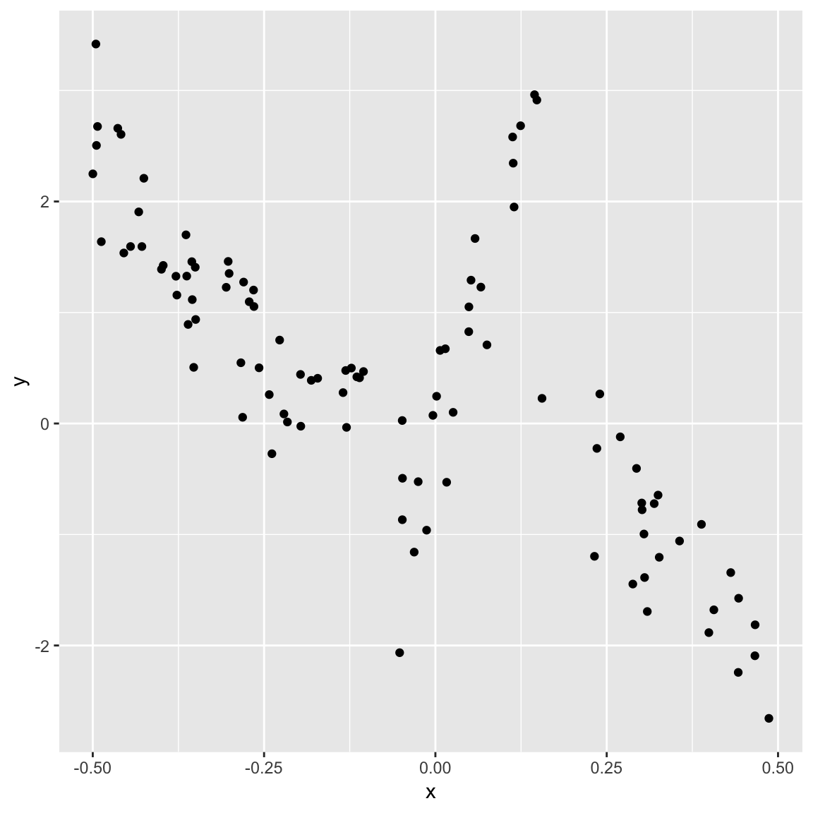
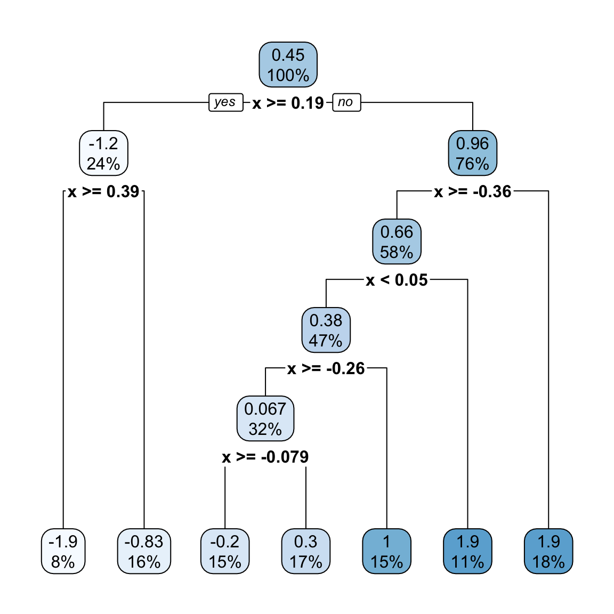
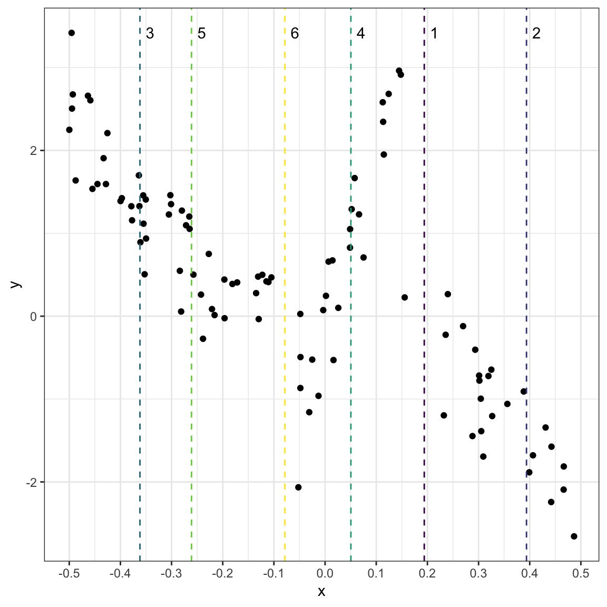
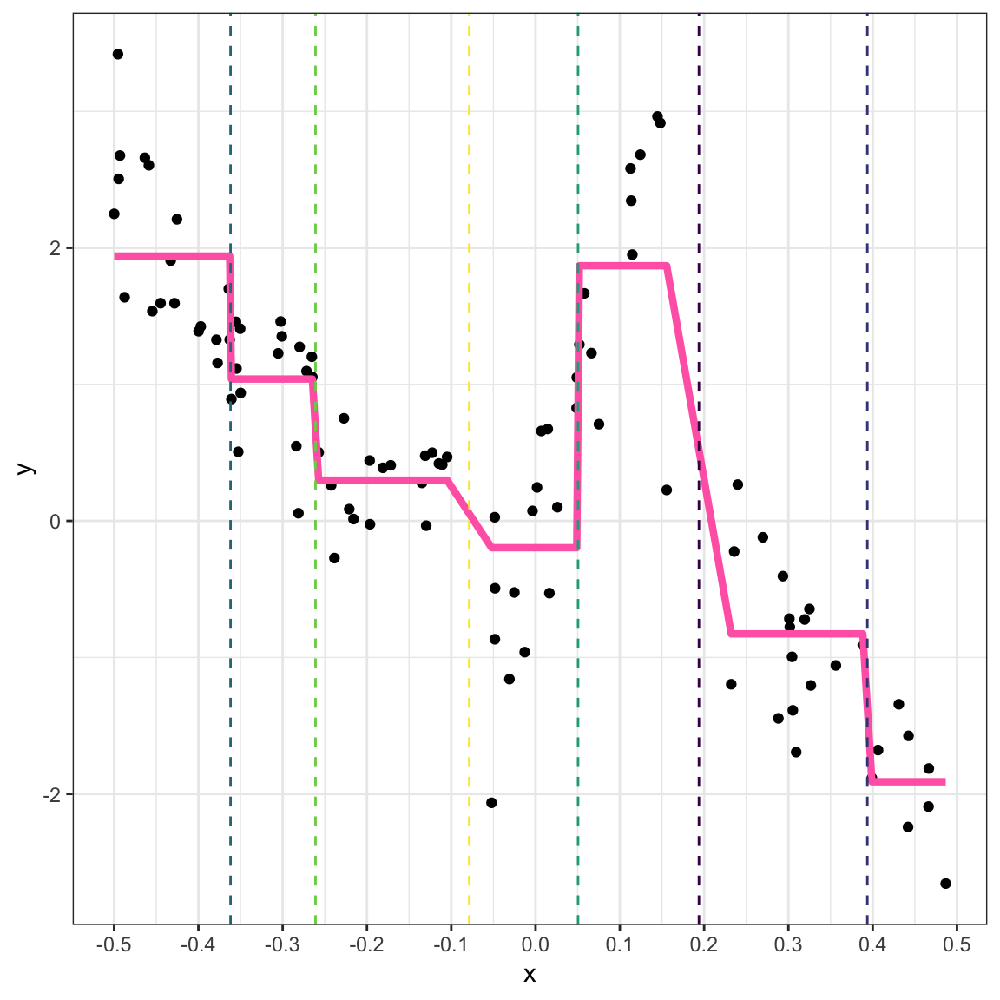
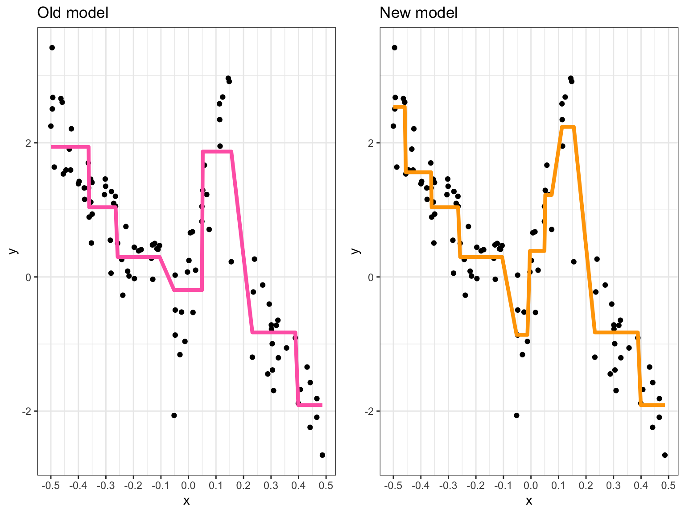
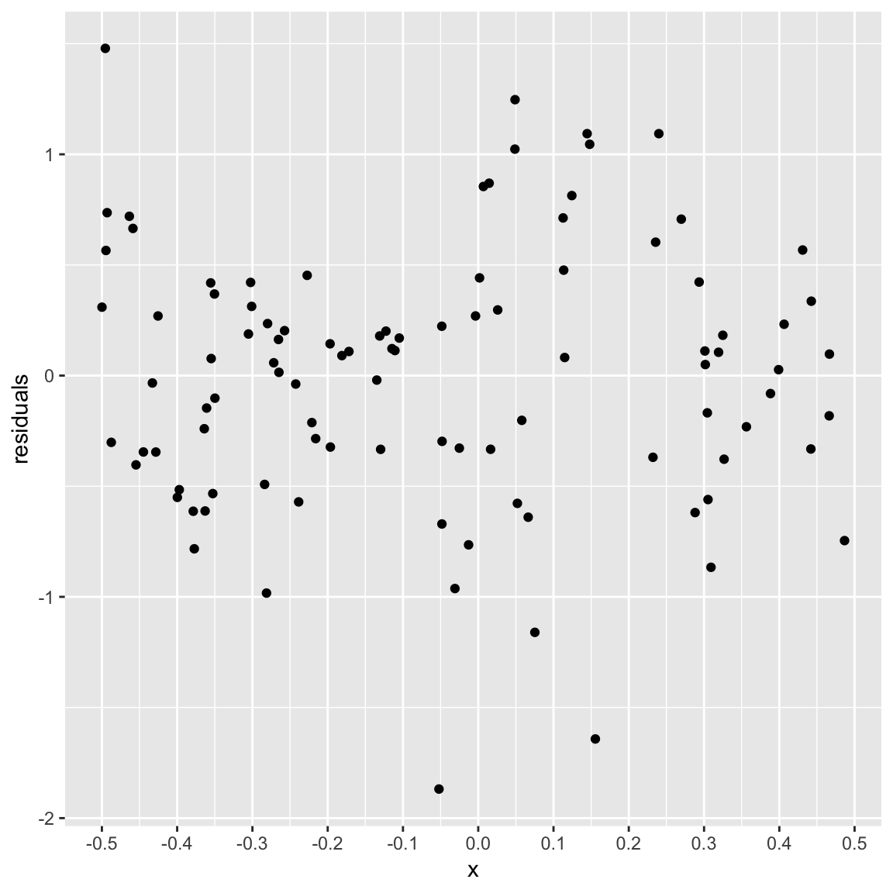

Regression (and decision) trees
Course web site
This is a link to the course web site, in case you need to go back and forth between tutorial and web materials: http://dmac.dicook.org
Overview
- What is a regression tree?
- How is it computed?
- Deciding when its a good fit
- Comparison with linear models
- How a classification tree differs from a regression tree?
Regression trees
- Regression trees recursively partition the data, and use the average response value of each partition as the model estimate
- It is a computationally intensive technique, involves examining ALL POSSIBLE partitions.
- The BEST partition by optimizing some criteria
- For regression, with a quantitative response variable, the criteria is called ANOVA:
\[SS_T-(SS_L+SS_R)\] where \(SS_T = \sum (y_i-\bar{y})^2\), and \(SS_L, SS_R\) are the equivalent values for the two subsets created by partitioning.
Example
Here’s a synthetic data set for illustration. Just making up a function to simulate some data to play with.
set.seed(900)
x=sort(runif(100)-0.5)
df <- data.frame(x, y=10*c(x[1:50]^2, x[51:75]*2, -x[76:100]^2)+rnorm(100)*0.5)
ggplot(df, aes(x=x, y=y)) + geom_point()
Model fit
library(rpart)
df_rp <- rpart(y~x, data=df)
df_rp
## n= 100
##
## node), split, n, deviance, yval
## * denotes terminal node
##
## 1) root 100 178.702600 0.44663870
## 2) x>=0.1938643 24 11.570180 -1.18844700
## 4) x>=0.3936632 8 1.198382 -1.91068800 *
## 5) x< 0.3936632 16 4.112218 -0.82732700 *
## 3) x< 0.1938643 76 82.705890 0.96298160
## 6) x>=-0.3618574 58 53.543780 0.65985860
## 12) x< 0.05045892 47 25.184950 0.37691520
## 24) x>=-0.2610339 32 13.289350 0.06655512
## 48) x>=-0.07853794 15 10.253730 -0.19625610 *
## 49) x< -0.07853794 17 1.085414 0.29844730 *
## 25) x< -0.2610339 15 2.237574 1.03901700 *
## 13) x>=0.05045892 11 8.519258 1.86879900 *
## 7) x< -0.3618574 18 6.660848 1.93971100 *😱 Aagh, that’s horrible!
🤷 Nah, its really simple!
Plot the model
library(rpart.plot)
rpart.plot(df_rp)
Plot the model on the data
This is how the data is split:
library(viridis)
splt <- as_tibble(df_rp$splits)
splt <- splt %>% mutate(order=1:nrow(splt)) %>%
select(index, order)
ggplot(df, aes(x=x, y=y)) + geom_point() +
geom_vline(data=splt, aes(xintercept = index, colour=factor(order)),
linetype=2) +
geom_text(data=splt, aes(x=index, y=max(df$y), label=order), nudge_x=0.02) +
scale_x_continuous(breaks=seq(-0.5, 0.5, 0.1)) +
scale_colour_viridis_d() +
theme_bw() +
theme(legend.position="none")
This is how the model looks:
df <- df %>%
mutate(bucket = cut(x, breaks=c(min(x)-0.1, splt$index, max(x))))
df_pred <- df %>%
group_by(bucket) %>%
mutate(pred = mean(y)) %>%
arrange(x)
ggplot(df_pred) +
geom_point(aes(x=x, y=y)) +
geom_line(aes(x=x, y=pred), colour="hotpink", size=1.5) +
geom_vline(data=splt, aes(xintercept = index, colour=factor(order)),
linetype=2) +
scale_x_continuous(breaks=seq(-0.5, 0.5, 0.1)) +
scale_colour_viridis_d() +
theme_bw() +
theme(legend.position="none")
Stopping rules
- Its an algorithm. Why did it stop at 7 groups?
- Stopping rules ar needed, else the algorithm will keep fitting until every observartion is in its own group.
- Control parameters set stopping points:
- minsplit: minimum number of points in a node that algorithm is allowed to split
- minbucket: minimum number of points in a terminal node
- In addition, we can also look at the change in value of \(SS_T-(SS_L+SS_R)\) at each split, and if the change is too small, stop. To decide on a suitable value for small a cross-validation procedure is used.
Below are the controls for the fit on the example data:
str(df_rp$control)
## List of 9
## $ minsplit : int 20
## $ minbucket : num 7
## $ cp : num 0.01
## $ maxcompete : int 4
## $ maxsurrogate : int 5
## $ usesurrogate : int 2
## $ surrogatestyle: int 0
## $ maxdepth : int 30
## $ xval : int 10If you change these options and re-fit, the model will change. Here we reduce the minbucket parameter.
df_rp <- rpart(y~x, data=df,
control = rpart.control(minsplit=10))
df_rp
## n= 100
##
## node), split, n, deviance, yval
## * denotes terminal node
##
## 1) root 100 178.7026000 0.44663870
## 2) x>=0.1938643 24 11.5701800 -1.18844700
## 4) x>=0.3936632 8 1.1983820 -1.91068800 *
## 5) x< 0.3936632 16 4.1122180 -0.82732700 *
## 3) x< 0.1938643 76 82.7058900 0.96298160
## 6) x>=-0.3618574 58 53.5437800 0.65985860
## 12) x< 0.05045892 47 25.1849500 0.37691520
## 24) x>=-0.2610339 32 13.2893500 0.06655512
## 48) x>=-0.07853794 15 10.2537300 -0.19625610
## 96) x< -0.008211745 7 2.5846810 -0.86324340 *
## 97) x>=-0.008211745 8 1.8301040 0.38735790 *
## 49) x< -0.07853794 17 1.0854140 0.29844730 *
## 25) x< -0.2610339 15 2.2375740 1.03901700 *
## 13) x>=0.05045892 11 8.5192580 1.86879900
## 26) x< 0.09397898 4 0.4662844 1.22369400 *
## 27) x>=0.09397898 7 5.4371120 2.23743000 *
## 7) x< -0.3618574 18 6.6608480 1.93971100
## 14) x>=-0.456696 11 0.8822070 1.56037400 *
## 15) x< -0.456696 7 1.7084100 2.53581300 *which yields a more complex model.
df_pred2 <- df %>%
mutate(pred = predict(df_rp, df))
p1 <- ggplot(df_pred) +
geom_point(aes(x=x, y=y)) +
geom_line(aes(x=x, y=pred), colour="hotpink", size=1.5) +
scale_x_continuous(breaks=seq(-0.5, 0.5, 0.1)) +
theme_bw() + ggtitle("Old model")
p2 <- ggplot(df_pred2) +
geom_point(aes(x=x, y=y)) +
geom_line(aes(x=x, y=pred), colour="orange", size=1.5) +
scale_x_continuous(breaks=seq(-0.5, 0.5, 0.1)) +
theme_bw() + ggtitle("New model")
grid.arrange(p1, p2, ncol=2)
What’s computed?
Illustration showing the calculations made to decide on the first partition.
sst <- var(df$y)*(nrow(df)-1)
compute_anova <- function(left, right) {
ssl <- var(left$y)*(nrow(left)-1)
if (nrow(left) == 1)
ssl <- 1
ssr <- var(right$y)*(nrow(right)-1)
if (nrow(right) == 1)
ssr <- 1
av <- sst - (ssl+ssr)
return(av)
}
aov_f <- data.frame(x=df$x[-1], f=df$y[-1])
for (i in 2:nrow(df)) {
left <- df[1:(i-1),]
right <- df[i:nrow(df),]
aov_f$x[i-1] <- mean(df$x[c(i-1, i)])
aov_f$f[i-1] <- compute_anova(left, right)
}
p1 <- ggplot(df, aes(x=x, y=y)) + geom_point(alpha=0.5) + scale_x_continuous(breaks=seq(-0.5, 0.5, 0.1))
p2 <- ggplot(data=aov_f) +
geom_line(aes(x=x, y=f), colour="hotpink") +
geom_vline(xintercept = df_rp$splits[1,4], colour="hotpink", linetype=2)
grid.arrange(p1, p2, ncol=1)
Residuals
df_rp <- rpart(y~x, data=df)
df_rp_aug <- cbind(df, e=residuals(df_rp))
ggplot(df_rp_aug, aes(x=x, y=e)) + geom_point() +
ylab("residuals") + scale_x_continuous(breaks=seq(-0.5, 0.5, 0.1))
Goodness of fit
gof <- printcp(df_rp, digits=3)
##
## Regression tree:
## rpart(formula = y ~ x, data = df)
##
## Variables actually used in tree construction:
## [1] x
##
## Root node error: 179/100 = 1.79
##
## n= 100
##
## CP nsplit rel error xerror xstd
## 1 0.4724 0 1.000 1.023 0.1239
## 2 0.1259 1 0.528 0.566 0.0840
## 3 0.1110 2 0.402 0.525 0.0795
## 4 0.0540 3 0.291 0.431 0.0641
## 5 0.0350 4 0.237 0.359 0.0605
## 6 0.0109 5 0.202 0.307 0.0553
## 7 0.0100 6 0.191 0.303 0.0553The relative error is \(1-R^2\). For this example, after 6 splits it is 0.2015507. So \(R^2=\) 0.7984493.
1-sum(df_rp_aug$e^2)/sum((df$y-mean(df$y))^2)Strengths and weaknesses
- There are no parametric assumptions underlying partitioning methods
- Also means that there is not a nice formula for the model as a result, or inference about populations available
- By minimizing sum of squares (ANOVA) we are forcing the partitions to have relatively equal variance. The method could be influenced by outliers, but it would be isolating the effect to one partition.
- Because it operates on single variables, it can efficiently handle missing values.
Your turn
Here is a small data set. Manually compute a regression tree model for the data. Sketch the model.
d <- tibble(x=c(1, 2, 3, 4, 5), y=c(10, 12, 5, 4, 3))
dClassification trees
When the response is categorical, the model is called a classification tree. The criteria for making the splits changes also. There are a number of split criteria commonly used. If we consider a binary response (\(y=0, 1\)), and \(p\) is the proportion of observations in class \(1\).
- Gini: \(2p(1-p)\)
- Entropy: \(-p(\log_e p)-(1-p)\log_e(1-p)\)
Which rewards splits where the observations are all one class.
Lab exercise
- OECD PISA, what factors affect reading scores?
- 15 year old standardised test scores, Australia, 2015
- Response: math
Predictors: gender, anxtest, wealth, math_time, books, tvs
Make a plot of all the variables
Fit a linear model
Fit a regression tree
What is the most important variable
How good is the model? Compute the \(R^2\) for the tree.
Which model fits better? The tree or the linear regression model?
Change the control parameters to reduce the \(R^2\) of the tree below that of the regression model.
Share and share alike

This work is licensed under a Creative Commons Attribution 4.0 International License.